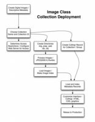

Image Class is an image database access system designed to accomodate data from a wide variety of sources for the purpose of search and retrieval on the web. Image Class provides powerful functionality for searching across multiple, uniquely defined, data collections, robust handling of multiple image files per record, and panning and zooming of very large images.
The basic assumption is that a collection of digital images exists in the form of a set of well-formed data records, the only true requirement being a unique record identifier. A designated field for image filenames is also recommended, though if the images are named after the record identifier, the identifier field can double as a filename field. Image Class allows any number and type of other fields.
Image Class is not a data management system. The creation and management of data records happens outside of Image Class. Data managed in Oracle, FileMaker Pro, Microsoft Access, Excel, and any other database system can be brought in to Image Class as long as data can be exported from the management system to a standard format or at least a format that is machine parsable.
Image Class does not try to replicate the sometimes complex data models employed in management systems. There are far to many possibilities. Instead, Image Class relies on a simple, flattened, representation of data. This generally works well and rarely requires a compromise in search, retrieval, and display functionality. Additional data preparation steps are sometimes necessary to flatten data for ingest into Image Class. However most cases involve relatively simple and direct import.
JPEG2000 is the preferred image file format for Image Class. Master images can be converted to JPEG2000 using the provided command line utilities built on the Kakadu Software JPEG2000 software development kit. JPEG2000 easily achieves 20:1 compression and includes multiple levels of resolution in a single file. Also supported is the MrSID format, which is a proprietary predecessor to JPEG2000, with similar qualities. Tools for creating MrSID files may be licensed from LizardTech. Image Class comes with the ability to decode JPEG2000 and MrSID files. Out of the box Image Class can serve both of these formats.
Many other media formats are supported as well. Formats commonly supported by web browsers are supported. Furthermore, Image Class allows an image to be stored as a series of image files covering a range of sizes, and can display the sizes appropriately.
Image Class is not just limited to images. Basic support is included for virtually any file format including QuickTime and MP3. Use of such formats may require special data preparation and configuration that require an advanced understanding of Image Class along with assistance from DLXS staff. It depends on the situation.
It is difficult to provide end-to-end documentation for the content deployment process because many aspects depend on individual situations. The following high level work flow graph might help.
I highly recommend simply reading the Image Class Collection Implementation workshop tutorial. It takes a very direct and linear approach deploying an image database in Image Class. It can be read in a few minutes, and gives a good overview of the process.
The remainder of this document describes in detail the tasks and tools of the data preparation process for Image Class with MySQL.
XPat continues to be a viable search engine option for Image Class. The flat, fielded, structure of Image Class data is a good fit for MySQL however. Data loading tends to be more straightforward with MySQL as well. DLXS 11 provided a script for migration of XPat collections to MySQL. DLXS 12 provides good and reasonable to use scripts for loading data directly to MySQL. The old migration script is no longer recommended. More information about the migration process.
This document describes the process of loading data directly to MySQL for use with Image Class.
Prepare image files for online use by converting to JPEG2000 or another suitable and supported format. Other than a unix command line utitlity for making JPEG2000 files, DLXS does not include scripts for automating or otherwise managing the conversion process due to the fact that workflow tends to vary radically from place to place.
Image Class requires that thumbnail images be generated as separate files. The original JPEG format is commonly used with a longest side pixel dimension of 100 (flexible). It works well to generate the JPEG2000 file first, and then to extract a low resolution image from the JPEG2000, scale it down to 100x100 (requires a utility such as ImageMagick) and save as JPEG. Generating the thumbnail from the master is usually much slower with no real advantage in terms of quality.
It is generally reasonable to target a 20:1 ratio for JPEG2000 compression. Depending on the situation, greater ratios may be possible with tolerable degradation of visual image quality. Determining the number of levels (image sizes) to include in the file is necessary. The following table suggests the number of levels to use based on the maximum pixel dimension of the image.
| Maximum Pixel Dimension | Levels |
|---|---|
| 0-800 | 2 |
| 801-1600 | 3 |
| 1601-3200 | 4 |
| 3201-6400 | 5 |
| 6401-12800 | 6 |
| 12801 and up | 7 |
Before getting too far, read about Image Class Image Loading for Online Delivery which precisely describes how image files are to be stored on the server, which may affect the naming and directory structure used when generating the files.
Please also see Image Class and JPEG2000 for details on using the provided tools for generating JPEG2000 files.
If the image files have been loaded properly and imageprep executed following instructions in the above two pages, everything should be in place to load the data records.
The data record loading tools need certain information in order to do their job.
Prefatory note for those working with legacy data: If collid-config.htm and collid-info.txt files are available from an earlier loading of the data, the config file values can easily be migrated to Collmgr using icdbprep.pl. Refer to the migration documentation.
The data source file must be UTF8 Encoded. XML exported from FileMaker Pro 6 and up is UTF8. Straight ASCII is also UTF8. If your data contains special characters (accented, etc.) it is not straight ASCII. If it is not already UTF8, it must be converted to UTF8. Non-UTF8 data in MySQL tables can be converted in place. Please read the DLXS Unicode documentation for more information.
Collmgr field: field_load_maps
Use collmgr to populate the field field_load_maps. List all fields to be imported from the data source file, one per line. Optionally follow each field name with an abbreviation. If an abbreviation is included, all subsequent references to the field must be by abbreviation.
If all fields are to be loaded to Image Class and none need to be renamed or abbreviated on import, then the field_load_maps field may be left blank. However if working with a legacy collection, fields and abbreviations must be listed if previously used field abbreviations are to be maintained, which is advisable to avoid bookmark breakages.
Sometimes it is helpful to abbreviate fields for clarity or brevity. Shorter names mean shorter URLs.
Abbreviations must not include period. Underscore is OK, and must be used in place of period for legacy collections. Try to use alphanumerics and underscore only, and it is best if the first character is a character of the alphabet, not a number or anything else. Also, spaces are not allowed in the abbreviation.
Field names in the source data file may contain spaces. Represent such spaces with the underscore character in field_load_maps.
Historically in Image Class the convention has been to start an abbreviation with the collid, followed by underscore (previously period), and then characters representing an abbreviation of the fieldname. This is still a good convention, but not required.
Again, If abbreviations are specified, then abbreviations must be used in all other configurations and references to the field throughout the system.
Collmgr field: admin_field_maps
Administrative mappings are used to mark the record identifer field, image filename fields, and other mission critical fields that facilitate the loading of data. Some Administrative Mappings are used in both data loading and searching (CGI/middleware).
Additional, contextual, help for this field is available in Collmgr.
| Admin Name Abbreviation | Admin Name | Used For |
| ic_id | Record ID | loading, searching |
| ic_all | All Fields | loading |
| ic_vi | View/Caption | loading |
| ic_fn | Image Filename | loading, searching |
| dlxs_ea | Entry Auth (please see Image Class Access Control) | searching |
| ic_exact | Match the entire field value when searching. | searching |
Collections with multiple images per record may require advanced use of Administrative Mappings for images, also known as Image Structures.
Collmgr field: field_xcoll_maps
Collection specific fields must be mapped to cross collection fields for the purpose of searching multiple collections simultaneously.
This can include the mapping for ic_all, providing an alternative way to specify which fields are searched when the user chooses to search "Anywhere in Record". The preferred use of ic_all is in admin_field_maps (see above).
In versions previous to DLXS 12, it was also necessary to map collid_all (e.g., sampleic_all) to ic_all, vice-versa, or the equivalent set of fields to be used when searching the entire record. This is no longer necessary. It was simply confusing. Now collid_all is only needed to maintain backward compatability for URLs that include collid_all as a search field value (rgnX parameter). If your collection preceeds DLXS12, map collid_all to ic_all in field_xcoll_maps. Use ic_all everywhere else collid_all was used in the past, such as dfltsearchflds.
Mappings influence the building of indexes at the time of data loading, and when indexes are rebuilt using provided tools.
"DC" stands for Dublin Core. The cross collection fields are loosely based on Dublin Core categories. "dc_de" is an abbreviation for Dublin Core Description. Since field names vary greatly among collections, categories are mapped to the common set of meta-categories. When multiple collections are searched together, searching is done on the meta-categories. Alternatively, a collection may be searched independently by the collection specific categories.
For example, a search across multiple collections using the DC Description field searches all of the collection specific fields that have been mapped to DC Description.
Image Class uses Dublin Core by default, however cross collection fields may be created at will simply by adding newly conceived fields to field_xcoll_maps. To use the newly added fields at the group level for cross collection searching, use Collmgr to create and/or modify the group record, adding the new field abbreviations and desired field labels to the field_labels field. Also be sure to select the desired collections in the group record.
While multiple sets of cross collection fields may be used, it is probably a good idea to map all collections to Dublin Core (or something similar) so that searching across all collections is an option. It is not necessary to use every cross collection field mapping.
Please see Guidelines for Mapping to Core Categories for Image Services for detailed guidance on mapping.
| Table of Default Cross Collection Fields | |
|---|---|
| Abbreviation | Field |
| dc_ti | Title |
| dc_cr | Creator |
| dc_su | Subject |
| dc_de | Description |
| dc_pu | Publisher |
| dc_co | Contributors |
| dc_da | Date |
| dc_ty | Type |
| dc_fo | Format |
| dc_id | Identifier |
| dc_so | Source |
| dc_la | Language |
| dc_re | Relation |
| dc_co | Coverage |
| dc_ri | Rights |
| dlxs_ma | Main Entry |
| IC.misc (deprecated) | Miscellaneous |
Notice "dlxs_ma" in the table above. dlxs_ma is used to identify fields that should be used when displaying results in a cross collection search. It is strongly recommended that each collection have at least one field mapped to dlxs_ma. In truth, dlxs_ma is minimally utilized by the middleware, however it does serve a useful role in the full-record view, and may be used more widely in the future.
Image Class can sort search results by any collection specific or cross collection field. Cross collection fields pose an interesting challenge since there are often multiple collection specific fields mapped to a single cross collection field. Image Class sorts on the value of the first collection specific field in the list of mappings.
To gain a broader understanding of Image Class access restrictions, please see Image Class Access Control Summary and Examples Table as well as Image Class Collection Access Restrictions.
Collmgr field: entryauth
The entryauth field holds the default item access control value to be included in the media_table record for each item (image or other media file). Set the entryauth field to one of "world", collid (the actual collid), or "no access".
To truly achieve item level access control, where access to each item of a collection is individually determined, the incoming data needs to have a field containing one of the three values for each record.The field must also be mapped to to dlxs_ea in Collmgr field field_admin_maps. Note that if the field is empty for a given record, the collid will be used. If the field value is not one of the three, the collection default will be used. "nobody" is a synonyn for "no access". "restricted" is a synonym for the collid. These synonyms may only be used in the records, and not in the entryauth Collmgr field.
| Value | Restriction |
|---|---|
| world | unrestricted access to full-size images. |
| [collid] | access to full-size images restricted to authorized users of the collection. note: use the actual collid, not "[collid]". |
| no access | access to full-size image is completely restricted. nobody can see it. |
Collmgr field: searchable_items
Controls display of images in search results when a record has multiple images. Values are "detail", "summary", "both". "Both" is the default value. If records only have one image, "summary" and "both" are safe choices. Read about Advanced Image Structures for more information.
Collmgr field: data_table
Collmgr field: media_table
Each collection's data is loaded into a set of two MySQL tables. One is the Data Table, and the second the Media Table. The actual table names are configurable by setting the values of the data_table and media_table fields in Collmgr. The suggested convention is to base the table names on the Collection ID. For example, use the collid for the Data Table name, and the collid plus "_media" for the Media Table name.
Note that in order to not disrupt access to a collection while loading new data, the data loading tools use the data_table and media_table values with "_prep" appended. Once loaded and tested, the tables can be renamed, dropping "_prep".
Please see Data and Media Tables for more information.
Collmgr field: dfltsrchflds
The dfltsrchflds Collmgr field must contain the list of fields (as abbreviations, when abbreviations are in use) that are to be searchable. Important: MySQL index building is influenced by this list of fields. The cross collection field mappings (field_xcoll_maps) are also used to determine the fields to index. Changes to either of these fields may warrant rebuilding the indexes if the data is not to be promptly be reloaded/indexed.
Loading of data for Image Class involves several complex steps that are tedious and difficult to perform without the provided tools. The image loading and configuration work of the first two steps above set the stage for a set of provided tools (Perl scripts) to handle the details of data ingest. To give you an idea of what goes on, here are some of the tasks that are handled.
| Tool | Function |
|---|---|
| load.pl | Provides automated handling of the several steps that make up the record loading process. Allows custom modifications to be made to data in MySQL by creating a collection specific code subclass. |
| icdbprep.pl | Called by load.pl or independently executed, it actually loads data from any one of a variety of source formats to Image Class Data and Media Tables in MySQL. May be subclassed to handle additional source formats, or variations. Also optimizes field definitions once loaded, and automatically determines which fields need to be indexed, and builds indexes. |
| fmpxml2mysql.pl | Called by load.pl as needed or independently executed, it reads a FileMaker Pro XML (FMPDSORESULT) export file, creates a matching MySQL table, and loads the contents of the file to the table. |
| droptable.pl | Drops a MySQL table. |
| swaptables.pl | Swaps two MySQL tables. |
| prep2prod.pl | Moves Image Class Data and Media tables into production from "prep". |
The following formats are supported by Image Class tools for data record ingest.
| Format | Notes |
|---|---|
| Tab Delimited Text | Field names must be in first row. |
| FileMaker Pro HTML Table Export | Export data from FileMaker Pro as HTML. |
| FileMaker Pro 6/7 XML (FMPDSORESULT) | Export data from FileMaker Pro as XML. FileMaker offers two XML format options, use FMPDSORESULT. |
| MySQL Table | Import data from a single MySQL table (no joins, etc.) |
| Any Other Format | Other formats can be handled by writing a Perl code subclass of $DLXSROOT/bin/i/image/recs.pm. Existing subclass examples are in the $DLXSROOT/bin/i/image/recs directory. |
Note about Macintosh Line Breaks:Macintosh line breaks are
not supported by the load scripts directly. This applies to HTML and tab delimited
text files, but is not a factor for XML. Convert Macintosh line breaks first
with a Perl inline substitution.
perl -pi -e 's,\x0d,\x0a,g' [filename]
The load scripts expect the data input file to be in $DLXSROOT/prep/c/collid .
The general data record input filenaming convention is to use the Collection ID appended with the string "-data" plus the filename extension. The extensions must be exacty as shown here.
Remember to use the actual collid!
When loading directly from a MySQL table, the table must be in the DLXS database, and it must be named like this:
Note that when loading data from a FileMaker Pro XML file, a collid_preload table will be generated automatically as part of the process, and deleted at the end. A pre-existing collid_preload table will be replaced without warning.
If the data is present in multiple formats, the following order of precedence is used by the load tools to select a source.
Finally! All the hard stuff is done, and with a little luck, the actual loading process will be a piece of cake.
Check List
Execute the following command (substituting the actual collid). This will create two tables in the DLXS MySQL database: collid_prep and collid_media_prep. It replaces existing prep tables if they exist. Production tables, if any, are not touched.
$DLXSROOT/bin/i/image/load.pl c=collid
When load.pl runs, uses a combination of the tool scripts depending on the situation.
The process can take anywhere from a few seconds to hours depending on the amount of data. If it seems like it is going to take forever and you are just trying it for the first time, use the maxload option to limit the number of records processed.
$DLXSROOT/bin/i/image/load.pl c=collid maxload=100
Test the collid_prep and collid_media_prep tables with the middleware by adding prep=1 to the URL.
If not completely satisfied with the results, make adjustments, and run load.pl again.
When the collection behaves as desired, it can be moved out of preparation and into production. This generally involves two steps.
See the Collmgr documentation for instructions on how to release the Collection Database record to production.
The perl script preptoprod.pl can be used to rename the Data and Media prep tables for production use.
$DLXSROOT/bin/i/image/preptoprod.pl c=collid
preptoprod.pl actually does several things...
preptoprod.pl uses a combination of the DLPS_DEV environment variable and the optional DLPS_DEV command line option to determine which rows of the Collection Database to read. The command line option overrides the value of the DLPS_DEV environment variable. At Michigan it, and anywhere else employing user/developer specific database rows and virtual hosts, it may be desirable to set DLPS_DEV=userid when invoking the command.
For example...
$DLXSROOT/bin/i/image/preptoprod.pl c=sampleic DLPS_DEV=jweise
The value of the command line option becomes obvious in the situation where production tools are being used on the command line, yet it is necessary to read development rows from the database. By default DLPS_DEV is 1, which is a good choice for most situations at most institutions. At Michigan, using the command line option to set DLPS_DEV explicitly to your username is probably more appropriate.
Confused? Try reading about DLXS Metadata Database.
DLPS_DEV environment variable not set???
It is important that the DLPS_DEV environment variable to be set. It dictates whether the production or release rows of the Collection Database are used to obtain configuration information. The assumption is that release rows are desired, since it is a data preparation situation. Set DLPS_DEV to 1 unless your implementation employs working directories (only Michigan does at the time of this writing) in which case set DLPS_DEV to your user id.
The script ran but there is only one record???
Assuming there should be more than just one, chances are the ic_id field is not configured properly, or, the field_load_maps are not correct. For example, if the ID field is called "ID" in the data file, and it is mapped to collid_id in field_load_maps (ID:::collid_id) but in admin_field_maps the mapping is erroneously ic_id:::collid_idno, well, you might end up with only one record. (and for the umteenth time remember, substitue "collid" with the actuall collid.)
The script ran, there are plenty of records, but none of the image files link up???
First, make sure there is an index directory at $DLXSROOT/img/c/collid. Second, double check field configurations in collmgr to make sure ic_fn is mapped properly in admin_field_maps, for instance. Did the script output a long list of image filenames not found? This is a sign that ic_fn might be mapped properly, but for some other reason the links are still not being made. Investigate by comparing filenames as they appear in the data records to the actual filenames in $DLXSROOT/img/c/collid.
The load.pm Perl module is used by the load.pl script. load.pm can be subclassed per collection to manipulate the data before and/or after loading. This is a very powerful option allowing complex manipulations to take place and be reliably repeated each time the data is loaded.
Creating a subclass of load.pm requires a working knowledge of Perl and likely SQL as well.
Store subclass modules in the $DLXSROOT/bin/i/image/load directory. Name modules using the convention load_collid.pm.
Manipulation of data using MySQL requires the data be first loaded into a MySQL table. The default preloadData method in load.pm does this for FileMaker Pro XML data. It loads it straight into a MySQL table named like collid_preload before doing anything else. Therefore if you are working with FileMaker Pro XML data and a subclass for additional manipulations is needed, it works well to first call SUPER from your subclassed preloadData method.
A subclass of load.pm for the workshopic collection can be found at $DLXSROOT/bin/i/image/load/load_workshopic.pm. It provides a useful example of how to subclass load.pm to add a new field and populate it with information derived from another field.